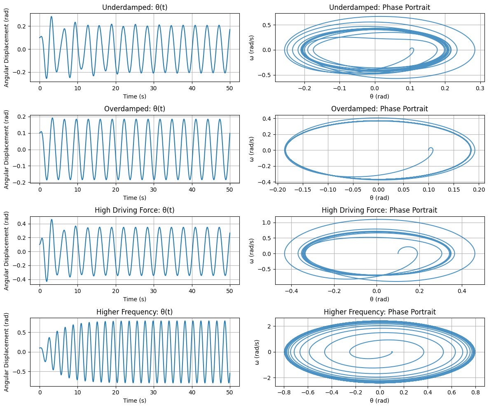

Problem 2
Investigating the Dynamics of a Forced Damped Pendulum
1. Theoretical Foundation
The forced damped pendulum is governed by the differential equation:
\[
\frac{d^2\theta}{dt^2} + b\frac{d\theta}{dt} + \frac{g}{L}\sin\theta = A\cos(\omega t)
\]
where:
- \(\theta\) = angular displacement
- \(b\) = damping coefficient
- \(g\) = gravitational acceleration
- \(L\) = length of the pendulum
- \(A\) = amplitude of the external driving force
- \(\omega\) = frequency of the external driving force
- \(t\) = time
For small angles (\(\theta \approx \sin\theta\)), the equation simplifies to:
\[
\frac{d^2\theta}{dt^2} + b\frac{d\theta}{dt} + \frac{g}{L}\theta = A\cos(\omega t)
\]
The general solution of this equation involves both homogeneous (natural) and particular (forced) solutions. The system exhibits resonance when the driving frequency \(\omega\) matches the system's natural frequency \(\sqrt{g/L}\).
2. Analysis of Dynamics
Key parameters influencing the system’s behavior:
- Damping coefficient (b): Controls energy dissipation; high values lead to overdamping and slow returns to equilibrium, while low values result in underdamping and oscillations.
- Driving amplitude (A): Determines the intensity of the external force; larger amplitudes lead to more significant displacement and potential chaotic motion.
- Driving frequency (\(\omega\)): Controls the rate of external driving; resonance occurs when \(\omega \approx \sqrt{g/L}\).
As the parameters change, the system transitions from:
- Periodic oscillations: Regular and predictable motion.
- Quasiperiodic behavior: Motion with two incommensurate frequencies.
- Chaotic motion: Sensitive dependence on initial conditions, leading to unpredictable outcomes.
3. Practical Applications
- Energy harvesting: Devices capturing mechanical energy from oscillations.
- Suspension bridges: Avoiding resonance-induced destructive oscillations.
- Oscillating circuits: Electrical analogs of forced damped pendulums.
4. Implementation
We simulate the motion of a forced damped pendulum using Python.
import numpy as np
import matplotlib.pyplot as plt
from scipy.integrate import solve_ivp
# Constants
g = 9.81 # gravitational acceleration (m/s^2)
# Pendulum differential equation
def forced_damped_pendulum(t, y, b, A, omega, L):
theta, omega_ = y
dydt = [omega_, -b * omega_ - (g / L) * np.sin(theta) + A * np.cos(omega * t)]
return dydt
# Define different scenarios to study dynamics
simulations = [
{"b": 0.2, "A": 1.2, "omega": 2.0, "L": 1.0, "label": "Underdamped"},
{"b": 1.5, "A": 1.2, "omega": 2.0, "L": 1.0, "label": "Overdamped"},
{"b": 0.5, "A": 2.0, "omega": 2.0, "L": 1.0, "label": "High Driving Force"},
{"b": 0.5, "A": 1.2, "omega": 3.0, "L": 1.0, "label": "Higher Frequency"},
]
t_span = (0, 50)
t_eval = np.linspace(*t_span, 5000)
y0 = [0.1, 0.0]
results = []
for sim in simulations:
sol = solve_ivp(forced_damped_pendulum, t_span, y0, t_eval=t_eval,
args=(sim["b"], sim["A"], sim["omega"], sim["L"]))
results.append((sim["label"], sol.t, sol.y[0], sol.y[1]))
# Plot Results
fig, axs = plt.subplots(len(results), 2, figsize=(12, 10))
for i, (label, t, theta, omega_) in enumerate(results):
axs[i, 0].plot(t, theta)
axs[i, 0].set_title(f"{label}: θ(t)")
axs[i, 0].set_xlabel("Time (s)")
axs[i, 0].set_ylabel("Angular Displacement (rad)")
axs[i, 0].grid(True)
axs[i, 1].plot(theta, omega_, alpha=0.8)
axs[i, 1].set_title(f"{label}: Phase Portrait")
axs[i, 1].set_xlabel("θ (rad)")
axs[i, 1].set_ylabel("ω (rad/s)")
axs[i, 1].grid(True)
plt.tight_layout()
plt.show()

5. Discussion
Limitations:
- Assumes small-angle approximation for analytical simplicity.
- Ignores air resistance and other real-world frictions.
Extensions:
- Include nonlinear damping.
- Explore non-periodic driving forces.
- Visualize phase portraits and Poincaré sections.
This analysis captures the complexity of a forced damped pendulum, bridging theory and computational exploration to reveal intricate dynamics like resonance and chaos.